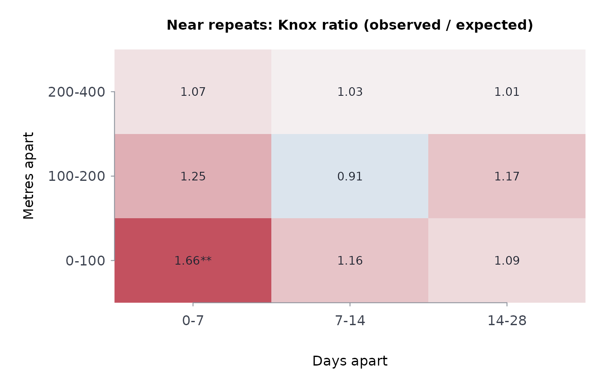

Asks whether incidents close together in space also happen close together in time more often than chance would give – the near-repeat pattern of burglary and shootings. Pairs of incidents are classified by distance band and time band; each cell's count is compared with the count expected if the times were shuffled among the locations, and a Monte Carlo permutation test gives its p-value.
Usage
knoxtst(
x,
y,
time,
spcbands,
tmbands,
nsim = 999L,
seed = NULL,
xy = c("lonlat", "planar"),
maxprs = 5e+07
)Arguments
- x, y
Locations: longitude and latitude in degrees by default (
coords = "lonlat"), or planar coordinates in metres.- time
Times of the incidents:
Date,POSIXct, or numbers in days.- spcbands
Upper edges of the distance bands in metres, increasing:
c(100, 200, 400)is 0-100, 100-200 and 200-400 m.- tmbands
Upper edges of the time bands in days, increasing.
- nsim
Monte Carlo permutations. Default 999.
- seed
Optional seed for the permutations, a whole number from -2147483647 to 2^53 - 1; the caller's random stream is left as it was.
- xy
"lonlat"or"planar".- maxprs
Limit on candidate pairs held in memory. Default 5e7.
Value
A list of class rmbl_knox: table, a long data frame
with one row per distance-by-time cell (spclo,
spcup, tmlo, tmup,
observed, expected, ratio, p_value); the
n incidents used; nsim.
Details
Under the null hypothesis that the times are exchangeable among the locations, every unordered pair of locations receives a uniformly random pair of times, so the expected count in a cell is exact: \(E_{st} = S_s T_t / P\), where \(S_s\) is the number of pairs in distance band \(s\), \(T_t\) the number in time band \(t\), and \(P = n(n-1)/2\). The ratio is \(O_{st} / E_{st}\): above 1, pairs that close in space are that close in time more often than chance. The p-value of each cell is one-sided, \((1 + \#\{O^* \ge O\}) / (1 + nsim)\) over the permutations. Cells are tested separately; a table of many cells will show some small p-values by chance alone.
Only pairs within the largest distance band are needed, and they are found by hashing the locations to a grid, so the work grows with the number of close pairs rather than with \(n^2\).
Ties in time – incidents recorded to the day – put same-day pairs in the first time band (0 to its edge). The test speaks to the timing of incidents relative to each other, not to what caused them; near-repeat patterns also arise when one offender commits a series.
Errors: x, y and time of different lengths;
spcbands or tmbands not positive, finite and
increasing; nsim below 19; maxprs below 1; longitude and
latitude out of range under coords = "lonlat"; fewer than three
incidents. With seed the random number stream is set for the call
and restored afterwards.
References
Knox, E. G. (1964). The detection of space-time interactions. Journal of the Royal Statistical Society, Series C (Applied Statistics), 13(1), 25-30.
Mantel, N. (1967). The detection of disease clustering and a generalized regression approach. Cancer Research, 27(2), 209-220.
Johnson, S. D., Bernasco, W., Bowers, K. J., Elffers, H., Ratcliffe, J., Rengert, G. and Townsley, M. (2007). Space-time patterns of risk: a cross national assessment of residential burglary victimization. Journal of Quantitative Criminology, 23(3), 201-219.
Examples
b <- read.csv(system.file("extdata", "tps_break_enter_d14_2024.csv",
package = "rmoriebricklayer"))
b <- b[!is.na(b$lon), ]
kn <- knoxtst(b$lon, b$lat, as.Date(b$occ_date), spcbands = c(100, 200, 400),
tmbands = c(7, 14, 28), nsim = 199, seed = 1)
kn
#> ── Knox ratios, observed / expected pairs (508 incidents, 199 permutations)
#> distance 0-7 d 7-14 d 14-28 d
#> 0-100 m 1.66** 1.16 1.09
#> 100-200 m 1.25 0.91 1.17
#> 200-400 m 1.07 1.03 1.01
#>
#> * p < 0.05, ** p < 0.01, one-sided per cell (not adjusted for the number of cells)
#> ──────────────────────────────────────────────────────────────────
plot(kn)

# planar coordinates in metres and times in days, on simulated points
set.seed(5)
n <- 150
kp <- knoxtst(runif(n, 0, 2000), runif(n, 0, 2000), runif(n, 0, 365),
spcbands = c(200, 400), tmbands = c(14, 28),
nsim = 99, seed = 2, xy = "planar")
kp
#> ── Knox ratios, observed / expected pairs (150 incidents, 99 permutations)
#> distance 0-14 d 14-28 d
#> 0-200 m 0.77 0.73
#> 200-400 m 1.06 0.85
#>
#> * p < 0.05, ** p < 0.01, one-sided per cell (not adjusted for the number of cells)
#> ──────────────────────────────────────────────────────────────────
# bands must increase
try(knoxtst(b$lon, b$lat, as.Date(b$occ_date), c(400, 100), c(7, 14)))
#> Error : `spcbands` must be positive, finite and increasing